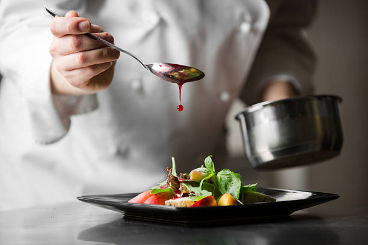

Bare Pantry Mission
The Ultime Recipe ResourCe
Providing the ultimate recipes while being cost-friendly.

Cooking
Cooking or cookery is the art, technology and craft of preparing food for consumption with or without the use of heat. Cooking techniques and ingredients vary widely across the world, from grilling food over an open fire to using electric stoves, to baking in various types of ovens, reflecting unique environmental, economic, and cultural traditions and trends. The ways or types of cooking also depend on the skill and type of training an individual cook has. Cooking is done both by people in their own dwellings and by professional cooks and chefs in restaurants and other food establishments.